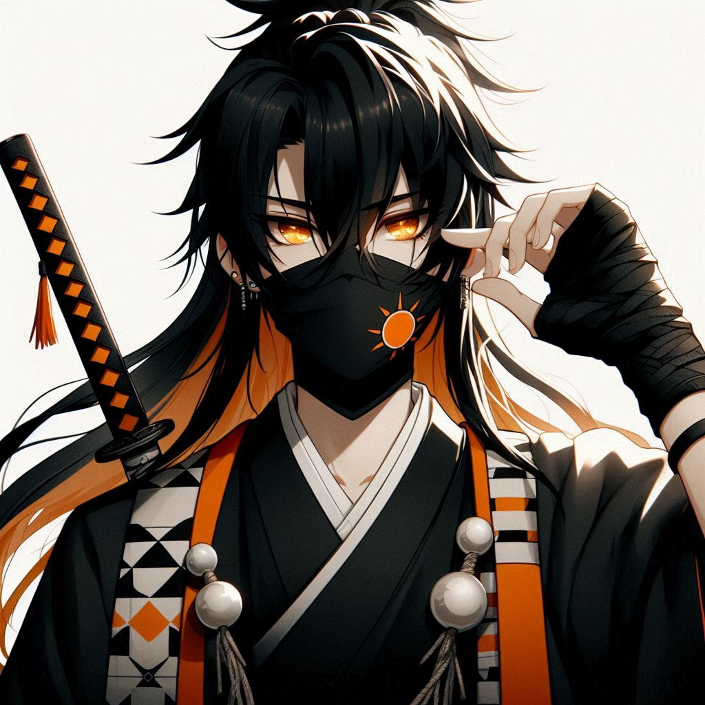

Seto is Kogen's boyfriend who die by Kogen's hands
He look like very kind person, but inside he awful human.
Seto is demon killer
Seto don't need any love feeling. He can make you fall in love with him, use and abandon, or even kill.
He want to kill Kogen because Seto think he just demon. By the way Kogen was exterminator.
